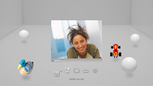

Venner > Stemme-/videochat > Start eller afslut tale-/videochat
Start eller afslut tale-/videochat
Brug af denne funktion kræver muligvis en opdatering af din System Software.
Du kan starte en tale-/videochat med personer på din venneliste. Hvis du vil chatte via tale, skal du bruge en lydenhed til input og output, f.eks. et headset (købes separat). Hvis du vil chatte via video, skal du bruge et USB-kamera (købes separat).
Start tale-/videochat
1. |
Vælg |
|---|---|
2. |
Vælg |
3. |
Vælg |
4. |
Skriv en besked, og vælg derefter [Send].  Hvis den pågældende person vælger at deltage i chatten, vises vedkommendes billede, og voice/videochatten kan starte. |
 (Venner) >
(Venner) >  (Begynd ny chat).
(Begynd ny chat). (Stemme-/videochat).
(Stemme-/videochat). (Inviter en ven) i den viste menu på skærmen.
(Inviter en ven) i den viste menu på skærmen.Tips
- PS3™-systemet understøtter tale-/videochat. Ekstra chatmuligheder, f.eks. chat under spil, kan være tilgængelig i spilsoftwaren. Yderligere oplysninger findes i brugervejledningen til den software, der bruges.
- Du skal være logget på PSNSM for at kunne chatte.
- Selvom du kan invitere flere venner til chat, vises der kun avatarer for de første fem venner, som du har valgt på skærmen.
- Der kan deltage op til seks personer i et chatrum.
- Tekst/videochatfunktionen kan ikke bruges, hvis der er angivet brugsbegrænsninger. Yderligere oplysninger om forældrekontrolindstillinger findes under [Om XMB™] > [Brug af indstillinger for forældrekontrol] i denne vejledning.
- Du kan bruge et kompatibelt USB-headset/Bluetooth®-headset/USB Kamera (EyeToy™)/PlayStation®Eye eller et USB Kamera, der er kompatibelt med USB-videoklassen (UVC) på PS3™-systemet.
- Når der tilsluttes et USB-kamera via USB-hub, skal hubben understøtte USB 2.0. Hvis du bruger en hub, der ikke understøtter USB 2.0, går det ud over billedkvaliteten, eller måske vises billedet slet ikke.
- Yderligere oplysninger om understøttede ydre enheder og brug fås hos den forhandler, hvor enhederne er købt.
Forlad et chatrum (afslut tale-/videochat)
Vælg (Forlad) på kontrolpanelet under en chat.
Tip
Hvis den person, der startede voice/videochatten, forlader chatrummet, lukkes chatrummet.